CS184/284A Spring 2025 Homework 3 Write-Up
Name: Hetvi Patel
Link to webpage: https://cal-cs184-student.github.io/hw-webpages-hetvi15986/hw3/index.html Link to GitHub repository: https://github.com/cal-cs184-student/hw3-pathtracer-hjp

Overview
In this homework, I built a path tracing pipeline, starting from basic ray generation and primitive intersection and extending it to a global illumination renderer. The key parts I implemented include camera ray generation, ray–primitive intersections (triangles and spheres), a Bounding Volume Hierarchy (BVH) for acceleration, and various lighting models– ranging from direct illumination to full global illumination with multiple bounces.In Part 1, I implemented camera ray generation and ray–primitive intersection for triangles and spheres. This was the foundation of the renderer since it let rays be cast into the scene. In Part 2, I built a Bounding Volume Hierarchy (BVH) to accelerate ray intersection. By organizing primitives into a binary tree of bounding boxes and recursively traversing it, I significantly reduced the number of intersection tests and improved rendering performance from linear to near logarithmic time.
In Part 3, I implemented direct illumination using both uniform hemisphere sampling and importance sampling of light sources. This introduced Monte Carlo integration and demonstrated how smarter sampling strategies reduce noise and improve convergence. In Part 4, I extended the renderer to support global illumination with multiple light bounces. Using recursive ray tracing and Russian Roulette termination, I simulated indirect lighting effects such as soft shadows and color bleeding, producing more realistic images. In Part 5, I implemented adaptive sampling to improve efficiency by allocating more samples to noisy pixels and fewer to converged ones. This reduced render time while maintaining image quality.
Overall, this assignment demonstrated how a physically-based renderer is built incrementally, combining geometry, acceleration structures, and probabilistic sampling. A key takeaway was the importance of both algorithmic efficiency (BVH) and sampling strategies in achieving realistic and computationally feasible rendering.
After implementing BVH, I saw the most significant improvements in rendering time. Initially, every ray had to test against all primitives in the scene, resulting in very slow rendering times. By organizing primitives into a hierarchical tree of bounding boxes and recursively traversing only relevant regions, I reduced intersection complexity from linear to roughly logarithmic. This significantly improved performance and made it feasible to render complex scenes with tens or hundreds of thousands of primitives.
Part 1: Ray Generation and Scene Intersection
In Part 1, I implemented camera ray generation and ray–primitive intersection for triangles and spheres.1. Ray Generation (Camera to World)
I closely followed this image to implement ray generation:
For each pixel (x, y), the renderer generates rays from the camera into the scene:
- Pixel coordinates are normalized to [0,1]: u = (x + dx) / width, v = (y + dy) / height
where dx and dy are random offsets for anti-aliasing.
- These coordinates are mapped to the sensor plane:
sensorX = (2u - 1) * tan(hFov/2) sensorY = (2v-1) * tan(vFov/2)
- The ray direction in camera space is:
dir_cam = (sensorX,sensorY,-1)
- This direction is transformed to world space:
dir_world = c2w*dir_cam
- The ray is then completely defined.
2. Ray Traversal and Intersection
Once a ray is generated, I test it against scene geometry:- The ray is passed into a BVH (Bounding Volume Hierarchy).
- BVH structure allows for a reducting in the number of primitives to test (efficiency).
- Each candidate primitive is tested:
has_intersection()(fast check- boolean)intersect()(record and update data)
Also, the ray keeps track of the closest hit using r.max_t = t
Triangle Intersection Algorithm (Möller–Trumbore)
I used the optimized Möller–Trumbore Triangle Intersection algorithm discussed in lecture, which computes the intersection point and barycentric coordinates in one step. This algorithm is more efficient for ray tracing.First, I compute the triangle edges and the helper vectors, as outlined in lecture.
E1 = P2 - P1 and E2 = P3 - P1 give the triangle edges. Then, I compute the vectors S, S1, and S2 to set up the system of equations for intersection. S = O - P1, S1 = D x E2, and S2 = S x E1Finally, I solve for the intersection parameter
t and the barycentric coordinates b1, b2, and b0. t = dot(S2, E2) / dot(S1, E1),I additionally have to check for valid intersections, by seeing if
b1 = dot(S1, S) / dot(S1, E1),
and b2 = dot(S2, D) / dot(S1, E1) b0 = 1 - b1 - b2
t is within the ray's far-near bounds and that the barycentric coordinates are all not negative. If the intersection is valid, I update the ray's maximum distance to t to record just the nearest hit between the ray and objecy. To end, I calculate the interpolated normal at the intersection point using the barycentric coordinates and the triangle's vertex normals. This allows for smooth shading across the surface of the triangle, instead of flat shading that can be drastic and noticable: n = b0 * n1 + b1 * n2 + b2 * n3 Normal Shading Results
 |  |
 |  |
Part 2: Bounding Volume Hierarchy
Here, I constructed the BVH for efficiency and implemented relevant methods using the BVH for faster lookup and presence testing.BVH construction algorithm
I built the BVH recursively. For each step in recursion, the bounding box (
bbox) of all primitives in the current range is computed, and a new node is initialized within the box. If the number of primitives is ≤ max_leaf_size, the node is returned as a leaf, signalling the base case of the recursion. Else, I choose the axis with the largest extent (the longest dimension of the bounding box diagonal calculated as max-min) as the axis to split on for the next division, as this would likely provide the most gains in a divide-and-conquer setting. Primitives are then sorted by the centroid of their bounding box along that axis, and the median primitive is used as the split point. Half go to the left child, half to the right. Both children are also constructed recursively. I used the median centroid split heuristic since it is simple. It doesn’t require extensive sums, just a simple sort. Also, splitting by the median ensures a stuffed binary-tree-like behavior. It prevents one side from being overly long and not-dense, balancing the tree and thus keeping search more efficient. This bounds tree depth to be O(log n) and prevents degenerate cases, aided by splitting along the longest axis (largest extent) which ensures more balanced spatial partitioning, reducing overlap between left/right bounding boxes that share a parent.
Images with normal shading for a few large .dae files that you can only render with BVH acceleration.
 |  |
 |  |
Compare rendering times on a few scenes with moderately complex geometries with and without BVH acceleration.
With BVH, rendering time on moderately complex scene were very low, often a 100x reduction in time from naive rendering. The Dragon took 0.042 seconds, CBlucy took 0.022 seconds, and maxplanck took 0.061 seconds. Without BVH, they took 5.22, 2.72, and 6.11 seconds respectively. This proves that a lot of primitive tests are culled before being tested as leaves through bounding boxes. With BVH, rays are better efficiently tested against primitives that are more likely to be positive hits. Without BVH, rays are tested against all primitives causing very bad runtime complexity. BVH allows for testing to approach log(n) time, though it’s not always perfect–but is still a drastic improvement than the naive method.Part 3: Direct Illumination
Walk-through of Both Direct Lighting Implementations
In uniform hemisphere sampling, for each hit point h_point I drawnum_samples random directions uniformly from the hemisphere formed around the surface normal. For each sampled direction, I cast a shadow ray and check if it hits a surface from where light is emitting. If there is a hit, I accumulate the surfaces' contribution with the reflection equation: f(wo, wi)*emission*cos(θ), divided by the PDF of 1/(2π) (which becomes *2π). Then, I average the result across samples. This method of sampling is noisy and high-variance. Randomly choosing directions likely will result in directions that don't hit a light in the first place, making importance sampling is vital for efficient sampling and better results. In importance sampling, I iterate over every light in the scene. Here, I sample directions directly toward each light using
sample_L. For each sample, I check if wi is above the surface (check condition wi_obj.z >= 0), and then cast a shadow ray with max_t = distToLight - EPS_F to check occlusion. If no occlusion is found, accumulate f(wo, wi) * radiance * cos(θ)/ pdf . images rendered with both implementations of the direct lighting function.
 |  |
 |  |
 |  |
Focus on one particular scene with at least one area light and compare the noise levels in soft shadows when rendering with 1, 4, 16, and 64 light rays and with 1 sample per pixel using light sampling.
 |  |
 |  |
The same with with uniform hemisphere sampling
 |  |
 |  |
Uniform Hemisphere vs Importance Sampling
Uniform hemisphere sampling produces noisier results than importance sampling at the same sample count values. it wastes a lot of samples on directions that never reach a light source. In a Cornell Box with a small area light, the probability of a random hemisphere's sample hitting the light is low. Most samples dont contribute, and there's high variance. Importance sampling reduces this waste by only sampling toward a likely direction, decreasing the likelihood a sample contributes nothing, reducing variance and making this sampling more efficient in rendering. It also only checks if that path is occluded. As a result, importance sampling yields cleaner soft shadows and faster convergence than uniform hemisphere sampling all other parameters held equal, by a visible amount shown in the above diagrams.Increasing the number of light samples from 1 to 64 also leads to a consistent reduction in noise. Soft shadows appear very grainy and unstable at low light samples and are seen in uniform hemisphere sampling, especially on the floor and wall regions with little changes in light. By 16 light rays, the show boundaries become sharper and darker as regions stabilize, making the picture more discernible for importance sampling.
Clearly, Importance sampling results in less noise at the same sample counts, due to its targeted samples in direction more likely to contribute non-zero radiance– making it better than random uniform hemisphere sampling– resulting in more efficient sample use, faster rendering, better picture quality, and faster convergence.
Part 4: Global Illumination
Implementation of Indirect Lighting (at_least_one_bounce_radiance)
The function starts by calculating the one-bounce direct radiance at the hit point using one_bounce_radiance . If the ray_depth == 1, return immediately since no further bounces can be made. Else, I sample a new direction with isect.bsdf->sample_f, which returns the BSDF value f and the sampled direction wi with a PDF (if near 0, return early). I then transform the sampled direction wi to world space with respective matrix transforms and make a new ray from the offset by EPS_F (preventing self-intersection). I also decrement this new ray’s depth. If this ray intersects with the scene, I recursively call at_least_one_bounce_radiance on the intersection and accumulate its contribution with the reflection equation: f * indirect * cos(θ) / pdf. If
isAccumBounces is true, I add the indirect contribution. Else, I replace the direct with the indirect bounce, allowing bounces to be isolated. Russian Roulette helps give an unbiased random termination of this recursion. I sample a random number with coin_flip() and terminate the current path with probability 0.3 (continue with probability 0.7). If the path continues, I divided the indirect contribution by continuation probability= 0.7 to compensate, keeping the estimator unbiased. Paths that survive are weighted higher to account for the terminated paths– so the expectation remains the same. edge case: If
max_ray_depth > 1, I still trace at least one indirect bounce, so that indirect illumination is not skipped.Images: Global (direct and indirect) Illumination.
s = 1024 samples per pixel.
 | 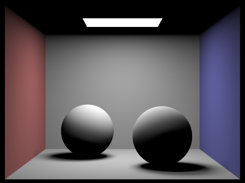 |
CBbunny: compare only direct illumination and only indirect illumination.
s= 1024 samples per pixel.
 |  |
Indirect lighting allows areas where there is no light to be illuminated, making the scene seem more realistic and makes lighting less harsh. Through indirect lighting, I can see the softer areas of shading and the transitions between surfaces, as well as the bleeding of colors between surfaces. Direct lighting shows the immediate affect of the light sources on the scene, making the scenes seem like models in precisely-lit art displays. There's harsher transitions in light and only the shadows/colors created from the first surface the light hit are shown. Direct lighting shows the main sources of light, but lacks the same realism indirect lighting does.
CBbunny.dae with the -m flag set to 0, 1, 2, 3, 4, and 5 using 1024 samples per pixel and isAccumBounces=false to isolate each bounce.
Explain in your write-up what you see for the 2nd and 3rd bounce of light, and how it contributes to the quality of the rendered image compared to rasterization.
| m | false (unaccumulated) | true (accumulated) |
|---|---|---|
| m=0 | 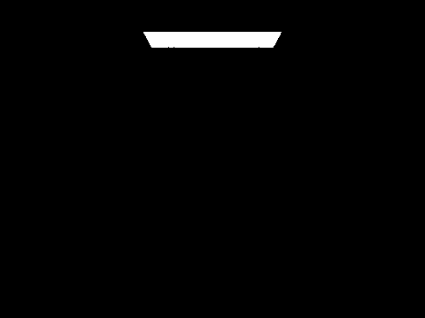 |
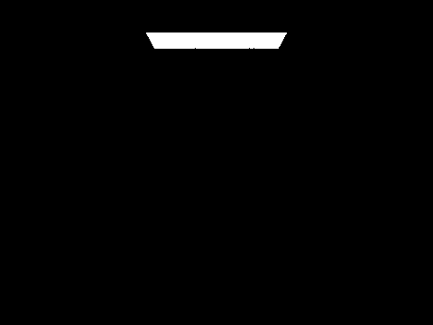 |
| m=1 | ||
| m=2 | 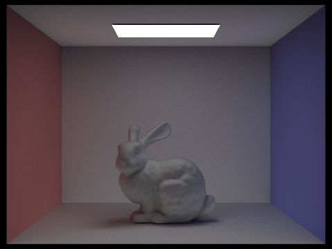 |
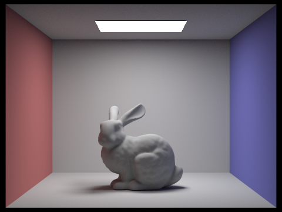 |
| m=3 | 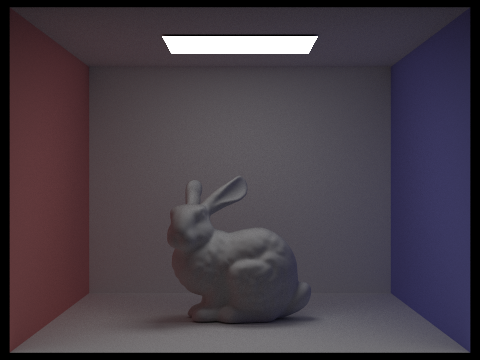 |
|
| m=4 | 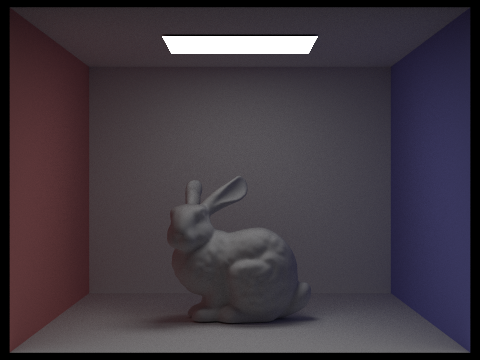 |
|
| m=5 | 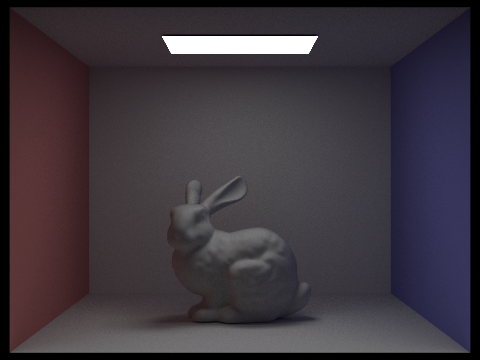 |
For unaccumulated bounces:
2. Accumulated vs Unaccumulated Bounces
isAccumBounces=false): Each image shows the contribution of a specific bounce's lighting effects to the scene. It's essential when analyzing how each bounce changes the final result of the render, and can be useful in determining a good number of bounces to stop at. Adding too many bounces can mean a lot of bounces are just marginally contributing to the final result, but taking up a lot of compute to be calculated. It's best to save compute and stop adding bounces when bounces start contributing very little to the scene.isAccumBounces=true): Each image sums all the bounces up to the current max_ray_depth. This results in full global illumination with soft shadows, color bleeding, and stable indirect lighting– an overall more realistic approach to lighting that is clearly shown in the renders above. CBbunny.dae: Russian Roulette rendering with max_ray_depth (-m)set to 0, 1, 2, 3, 4, and 100.
1024 samples per pixel (-s).
| m = 0 | m = 1 |
| m = 2 | m = 3 |
| m = 4 | m = 100 |
CBbunn.dae: rendered views with various sample-per-pixel rates.
- s = { 1, 2, 4, 8, 16, 64, 1024 }
- l = 4 light rays.
| s = 1 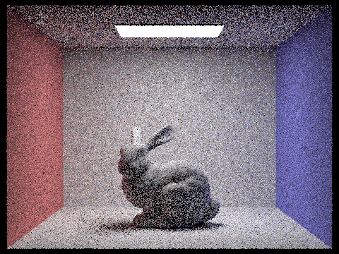 | s = 2 |
| s = 4 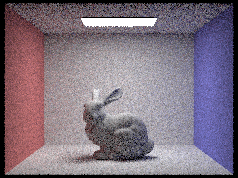 | s = 8 |
| s = 16 | s = 64 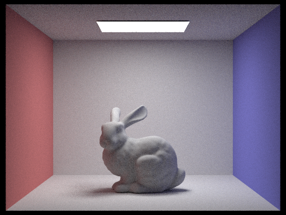 |
| s = 1024 |
As the number of samples per pixel increases, the noise in the image decreases, as expected by Monte Carlo expectations (more samples, less noise, better details). At the lowest sample per pixel values (s = 1, 2, 4, 8), we can see noise and high variance through the graininess found in the image. As the number of samples per pixel increases (s = 8, 16) , there is better indirect lighting effects as well as lower variance (lower noise) in the image. Then, there is a 4x (instead of 2x) increase to s = 64, in which the image looks the most clear and realistic. There are no visible noise effects and the shadows/indirect lighting effects/color bleeding follow what we’d expect in a real cornell box. The last image is a 16x increase from the previous image to s = 1024. This is slightly smoother than the previous image, but almost marginally so for this image. The returns of increasing the number of samples per pixel are decreasing when considering the cost of increasing this rate, highlighting how noise decreases proportionally to the inverse √number of samples.
Part 5: Adaptive Sampling
Adaptive sampling allows us to dynamically determine the number of samples a pixel should be allocated based on a determination of that pixel's noisiness. If a pixel has already converged or is determined to have lower variance, use less samples [e.g. wall, flat surfaces]. Otherwise, add more samples for pixels who are noisier or are determined to have higher variance [e.g. boundaries, complex surfaces]. As a result, more efficient sampling is used across the render, resulting in better image quality due to higher sampling of noisy pixels and less wasted sampled on converged pixels, resulting less computational cost for high quality images.
I implemented this in
raytrace_pixel. I accumulate illuminance data as well as the radiance when taking samples for a certain pixel. Each sample has an illuminance caluclates and a running sum of s1 and s2– the sum of illuminances and the sum of squared illuminances respectively, that allow us to quickly calculate mean mu and variance sigma_sq immediately. mu = s1/n sigma_sq = (1 / (n-1)) * (s2 - (s1*s1) / n). For every
samplesPerBatch = 64 samples, the 95% confidence interval is calculated by multiplying by the z-score = 1.96. I = 1.96 * sqrt(sigma_sq / n) If
I ≤ maxTolerance * mu = 0.05 * mu , the determination is that the pixel has converged and no more samples are taken. Until this point, samples are continued to be taken. The final pixel color is also normalized by number of samples used, as well Results
- l = 1 sample per light , - m = 5 for max ray depth.Bunny
|
4096 
|
4096 Rate 
|
|
8192 
|
8192 Rate 
|
Spheres
|
4096 
|
4096 Rate 
|
|
8192 
|
8192 Rate 
|
These results show the lower (blue) samples per pixel in the rate images for the less noisy–which are likely to be near walls, flat surfaces, and the light sources. It also shows the higher (red) samples per pixel for the noisier pixels, which are closer to boundaries and shadowed areas. The adaptive sampling implementation's resulting images have better image quality in for the same number of samples per pixel, as more samples are allocated to the noisier pixels rather than being wasted on converged pixels.
(Optional) Part 6: Extra Credit Opportunities
Challenge Level 1: a more sophisticated pixel sampler that generates jittered samples.
For this extension, I implemented a jittered 2D sampler to replace the simple uniform grid sampler. I used the following slides as reference.
n by n grid, put one sample randomly in each cell. For ns_aa samples, I used n = sqrt(ns_aa) grid. Each cell contributes a sample at ((i+random)/n, (j+random)/n). This guarantees that samples are more evenly spread across the pixel being samples, reducing clumping and correlations that result in noise and aliasing in uniform random sampling.
|
Jittered s = 1 
|
Random s = 1 
|
|
Jittered s = 4 
|
Random s = 4 
|
|
Jittered s = 16 
|
Random s = 16 
|
Clearly, with higher samples per pixel, the jittered sampling results in better image quality with less noise and aliasing compared to the random sampling. The jittered sampling has more even distribution of samples across the pixel – resulting in smoother results, especially in areas with high contrast or fine details.
Challenge Level 1: surface area heuristic (SAH) for splitting BVH.
Rather than splitting primitives at the median along the axis corresponding to the largest extent (longest axis), SAH evaluates the cost of every split across all of the axes and chooses the axis that minimizes the expected work. For each axis, the bbox is divided into 12 equal bins along this axis and the primitives are assigned to a bin by its centroid’s positionThen, every split point between adjacent bins is used to calculate the cost of the split using each bounding box’s surface area. This estimate cost reflects how likely it is a ray will hit a child, since higher Surface Area means higher places a ray can hit. The axis and bins are chosen according to the lowest cost. This metric is able to partition the scene better, resulting in faster runtimes. The scenes are the same (shown by the dragon below), but runtimes are drastically faster when using SAH instead of naive median splitting.|
Naive: Median Splitting 
|
Optimized: SAH Splitting 
|
Naive Median vs Optimized SAH Splitting: Runtime Comparison
| Scene | Median Split Runtime (minutes) | SAH Split Runtime (minutes) | Speedup Factor |
|---|---|---|---|
| CBlucy.dae | 3:20 | 1:21 | 2.47x |
| CBbunny.dae | 1:57 | 1:31 | 1.29x |
| dragon.dae | 0:47 | 0:30 | 1.52x |
Clearly, the optiized SAH Splitting results in significantly faster runtimes across all scenes, with the most significant speedup observed in the CBlucy.dae scene. This demonstrates the effectiveness of SAH in improving the efficiency of BVH construction and ray tracing performance, espcially in scenes with complex geometry and high triangle counts such as CBlucy.dae, where the benefits of better partitioning are more pronounced.
Challenge Level 2: denoising through bilateral blurring
I implemented post-processing denoising via a bilateral filter inbilateral_filter. The filter is applied to the entire sampleBuffer after rendering. A bilateral filter preserves edges yet smoothes the image, as well as weighting by color. For each pixel, I calculate the weighted average over pixels in a radius, where each of these pixels has a weight: neighbor's weight is: weight = exp(–spatial_dist**2 / (2 * sigma_s**2)) * exp(-color_dist**2 / (2 * sigma_c**2))The
-s 32 where the image has more coherent structure but clearly has Monte Carlo noise. I used parameters: sigma_s = 5.0 and sigma_c = 0.05 (tuned for CBbunny.dae): maximize smoothing in flat regions while keeping shadow edges and boundaries sharp.
| Denoised | Noisy |
|---|---|
|
s = 32 
|
s = 32 
|
The End